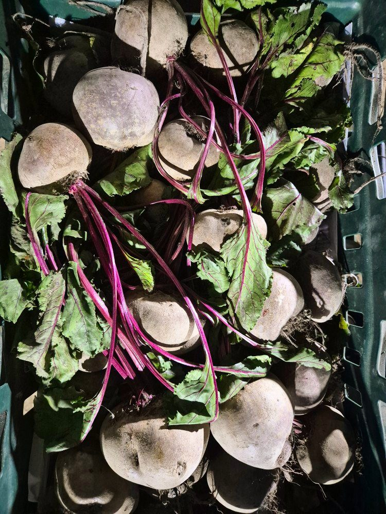
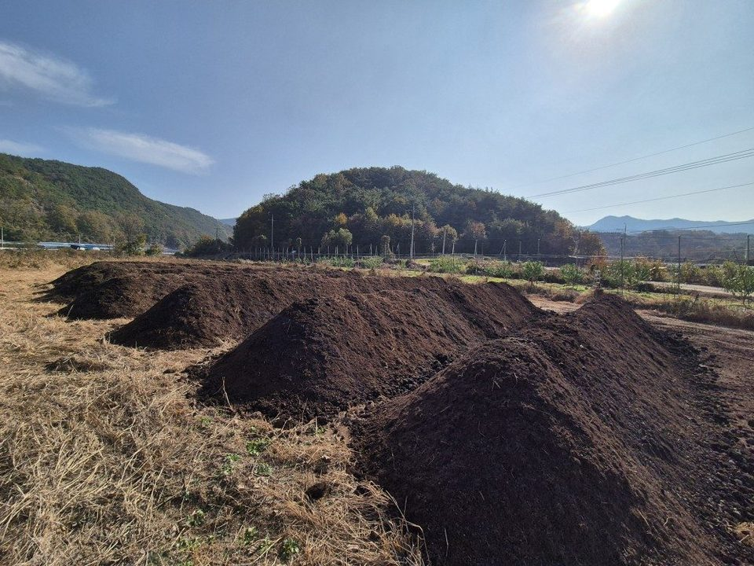
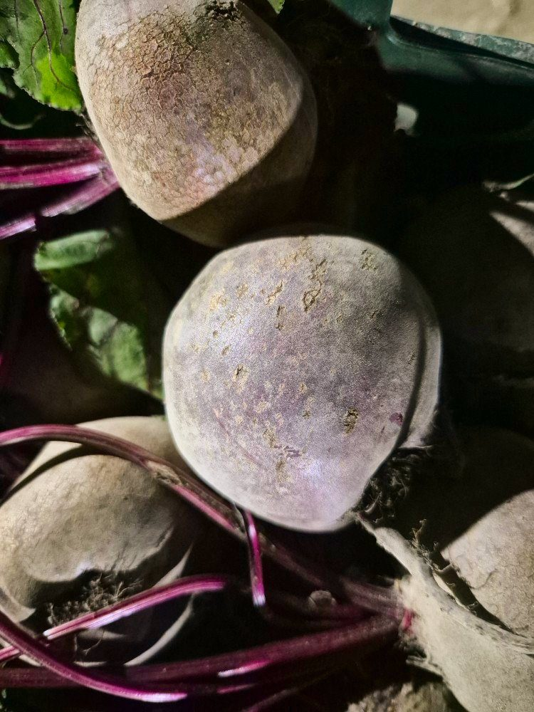
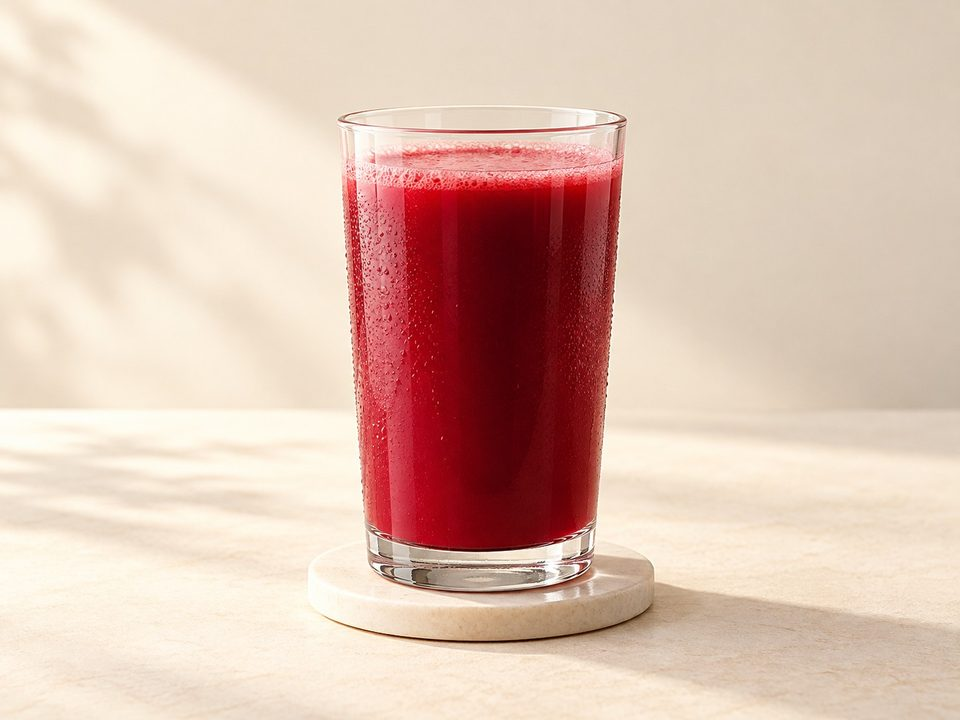
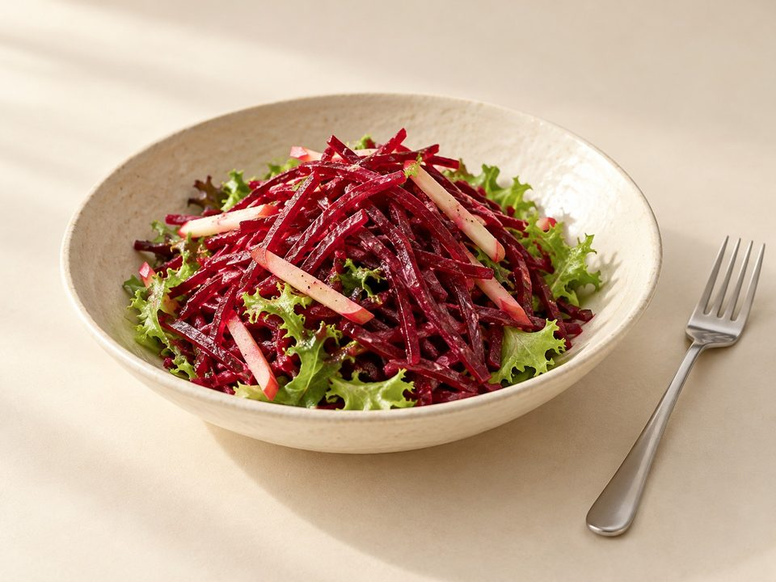
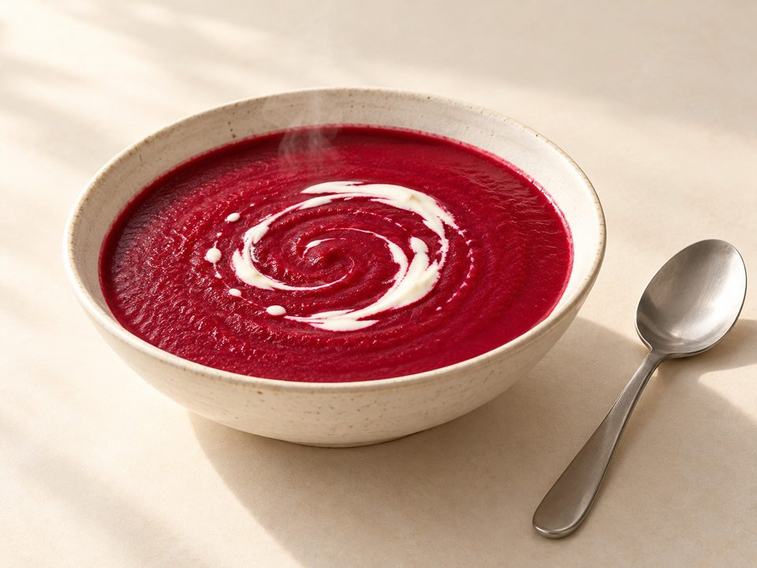

품절
햇 완두콩
품절, 10,000원~1kg 외 · 100g당 1,000원
발효퇴비 · 풀과 함께


1 / 3
- 배송
- 택배 5,000원 · 100,000원 이상 무료
- 직접 수령
- 영동 농장 (충북 영동군 학산면)
- 주문 알림
- 주문 즉시 주문번호·결제 안내 문자
- 적립
- 회원 구매 시 2% 적립
총 상품 금액 (0개)0원

풀과 함께
영동에덴원
비트
직접 만든 발효퇴비로 토양을 가꾸고,
풀과 함께 키우며 씨앗부터 수확까지 직접 합니다.
한눈에 보기
- 재배
- 풀과 함께(초생재배)
- 거름
- 자가제조 발효퇴비 · 유기질 비료
- 용량
- 1kg
- 보관
- 잎을 잘라 내고 신문지나 봉투에 싸서 냉장고 채소칸에 보관하세요.
STORY
자연과 함께, 재배는 과학적으로
직접 유기질 재료로 만든 발효퇴비와 유기질 비료, 유기농업자재를 활용해 균일하고 높은 품질을 유지합니다. 발효퇴비와 풀을 키워 만든 비옥한 토양과 미생물 재배 시스템이 만나 속까지 단단하게 영근 정직하고 맛있는 비트가 자랍니다.
FROM THE FIELD
밭에서 식탁까지

01 / 03
토양 만들기
직접 6개월 발효한 퇴비와 유기질 비료로 흙을 가꿉니다.
02 / 03
수확
풀과 같이 키워, 속까지 단단하게 영근 비트를 수확합니다.

03 / 03
비트
여러 과정을 거쳐, 풀과 함께 자란 영동에덴원 비트입니다.
TASTE & USE
활용하는 방법
- 착즙 · 주스사과 · 당근과 함께
- 샐러드 · 피클얇게 썰거나 채 썰어
- 구이 · 수프통째로 굽거나 삶아서
이렇게 드세요

비트주스

샐러드

비트수프
주문 후기
후기는 주문 단위로 남깁니다. 함께 주문한 상품이 있으면 그 상품의 후기에도 함께 보입니다.
첫 후기를 남겨 주세요.
상품정보제공고시
- 품목 또는 명칭
- 비트
- 포장단위별 내용물의 용량(중량), 수량, 크기
- 1kg
- 생산자, 수입품의 경우 수입자를 함께 표기
- 농업회사법인 주식회사 에프엔엘바이오푸드 · 충청북도 영동군 학산면 모리2길 3-1
- 「농수산물의 원산지 표시 등에 관한 법률」에 따른 원산지
- 국내산(영동군)
- 제조연월일, 소비기한 또는 품질유지기한
- 신선 농산물로 별도 소비기한 없음 — 수확 후 바로 발송합니다. 받으신 뒤 냉장고 채소칸에 두고 되도록 빨리 드세요.
- 상품구성
- 비트 1kg · 상자 1개
- 보관방법 또는 취급방법
- 잎을 잘라 내고 신문지나 봉투에 싸서 냉장고 채소칸에 보관하세요.
- 소비자 안전을 위한 주의사항 (「식품 등의 표시ㆍ광고에 관한 법률 시행규칙」 제5조 및 [별표 2]에 따른 표시사항을 말함)
- 흙이 묻어 있을 수 있으니 씻어 드세요. 드신 뒤 소변·변이 붉게 보일 수 있으나 비트 색소 때문입니다. 받으신 날 상태를 확인하시고 문제가 있으면 바로 연락 주세요. 부정불량 식품신고 : 국번없이 1399. 소비자 상담실 : 010-5126-7578
- 소비자 상담 관련 전화번호
- 010-5126-7578
배송·교환·환불
- 배송비
- 택배 5,000원 · 상품 합계 100,000원 이상 무료. 제주·도서산간은 배송비가 추가될 수 있습니다.
- 직접 수령
- 충청북도 영동군 학산면 모리2길 3-1 · 주중,주말 오전 9시~오후 6시, 방문 전 전화
- 교환·환불
- 교환·반품·환불 안내 보기
함께 담기 좋은 제품


활용하는 방법의 요리 사진 등 일부 사진은 AI로 만든 연출 이미지입니다.